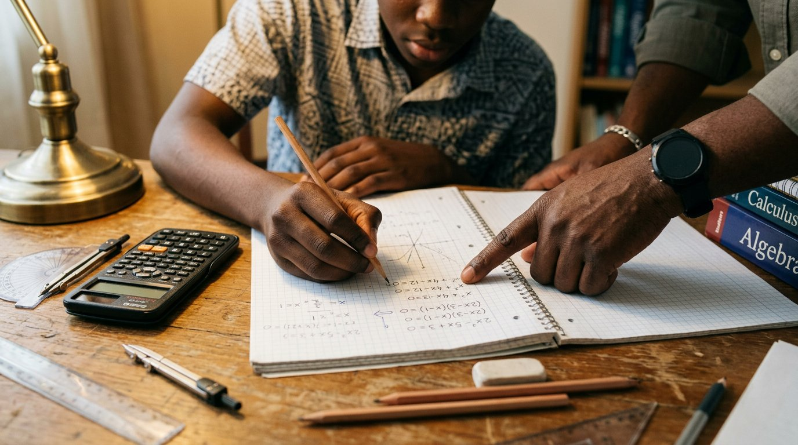

Seedwel Tuition
Mathematics
Patient, step-by-step mathematics tuition — from foundational number work to exam preparation. We focus on understanding, not memorising, so learners can keep up in class and grow confident with numbers.